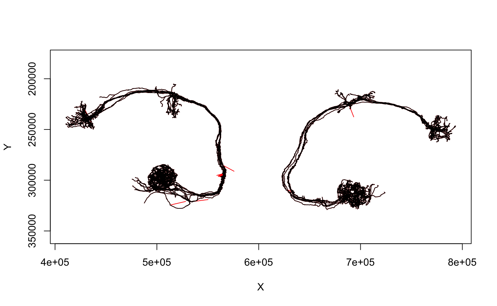

R/unspike.R
unspike.RdRemove artefactual spikes in neuron tracing due to registration errors
unspike(x, threshold, ...) # S3 method for neuron unspike(x, threshold, ...) # S3 method for neuronlist unspike(x, threshold, ...)
| x | A neuron, or neuronlist |
|---|---|
| threshold | A numeric threshold for an XY distance that would be considered suspicious. |
| ... | arguments passed to methods |
A neuron or neuronlist with artefactual spikes removed. Segments that cannot currently be fixed are left untouched with a warning issued.
unspike currently uses a very simple algorithm to remove big
jumps: it just looks for XY jumps bigger than a specified distance and
removes the first associated node. It currently cannot deal with two
slightly more difficult situations:
When there are two or more points that are far out of register.
When there a branch or end points that are out of register.
Handling consecutive points or end points should be a fairly straightforward addition. Branch points require a little more thought.
unspike has the side effect of losing the CATMAID node ids in the output neuron. connector/tag information is retained although the node ids are translated to the new numbering system.
# \donttest{ da1pns=read.neurons.catmaid("annotation:^glomerulus DA1$") # set threshold to 5000 nm da1pns.fix=unspike(da1pns, threshold=5000)#> Warning: segment with one bad point#> Warning: segment with one bad point#> Warning: segment with one bad point#> Warning: segment with one bad point#> Warning: segment with one bad point#> Warning: segment with one bad point#> Warning: segment with one bad point# overplot fixed neuron leaving red spikes visible plot(da1pns.fix, col='black', WithNodes=FALSE, add=TRUE)# }